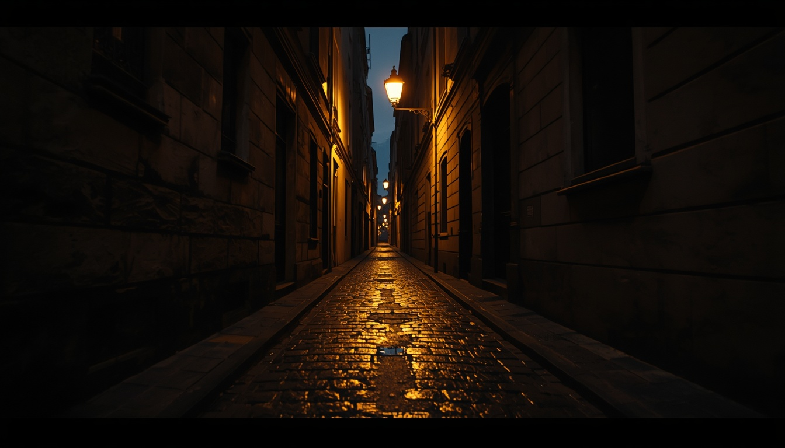
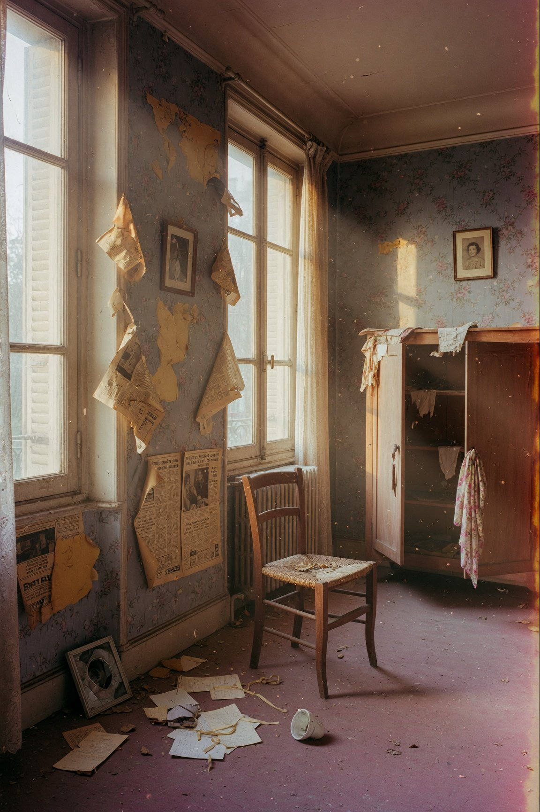
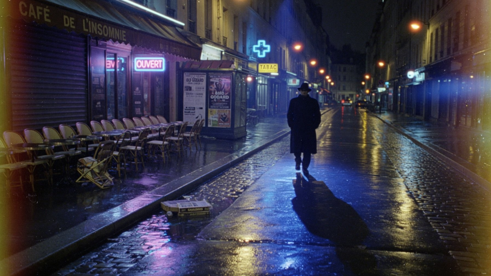
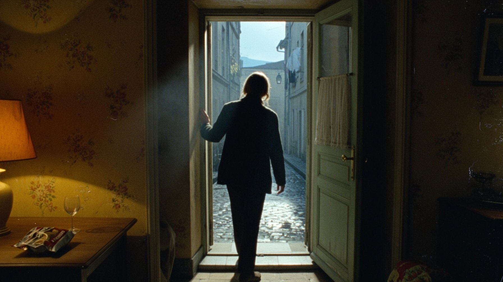
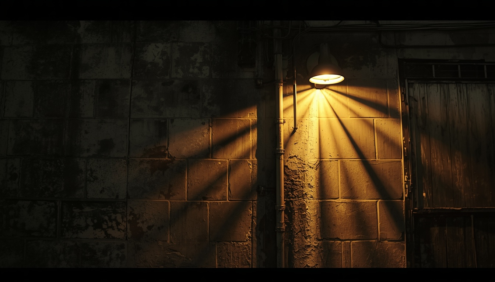
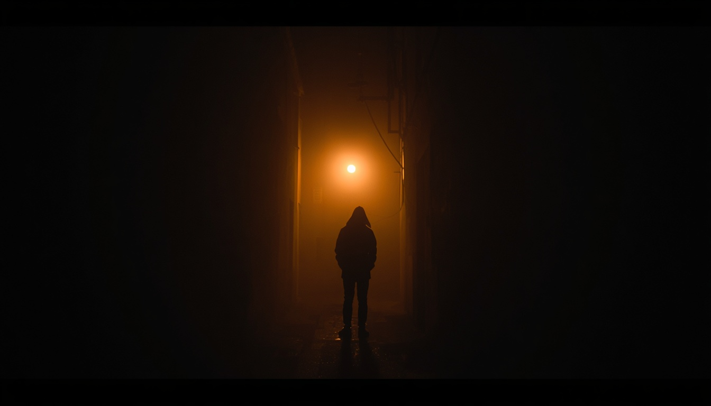
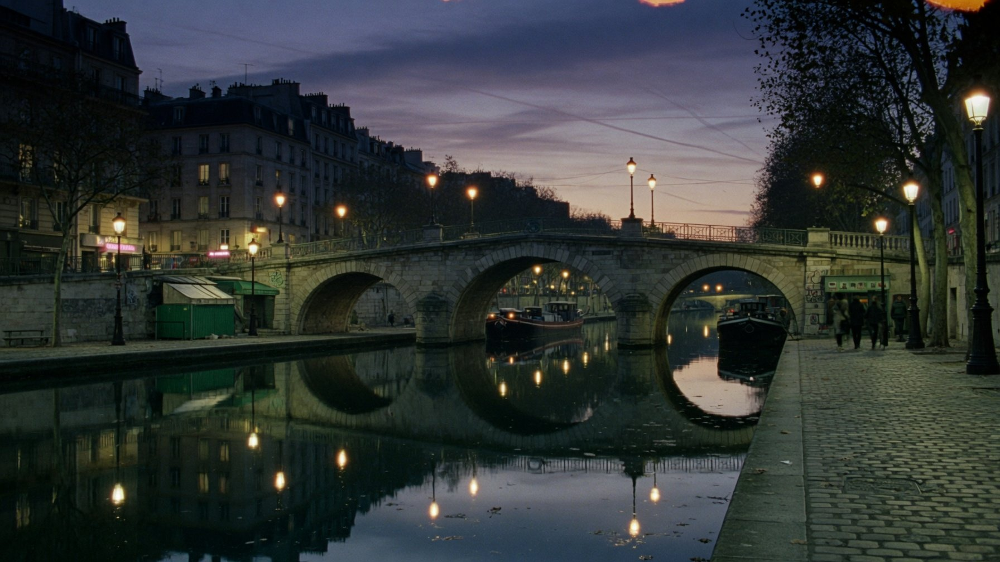
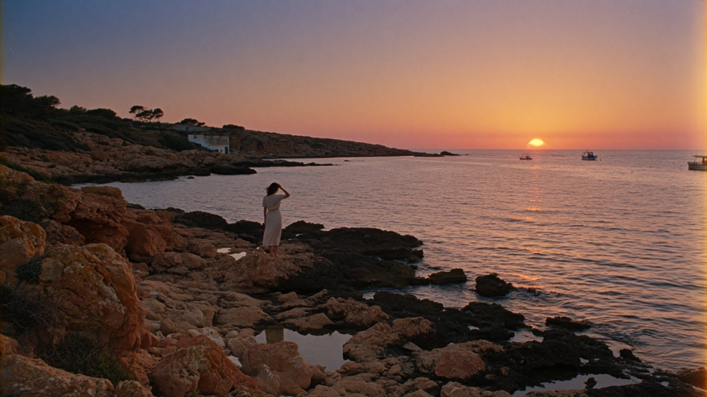
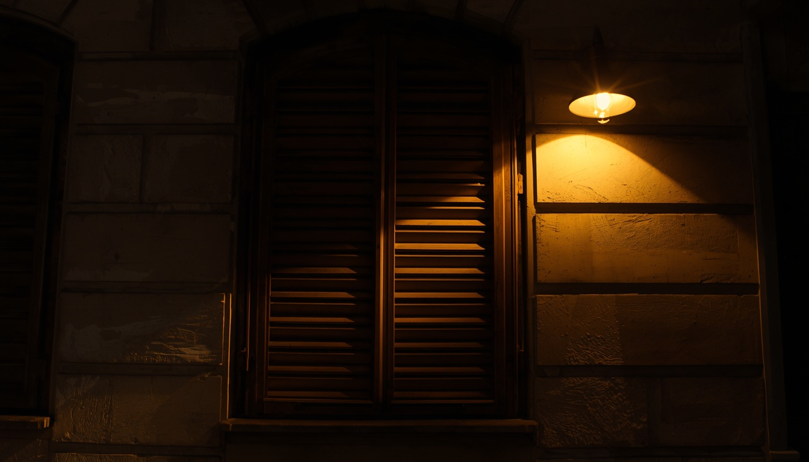
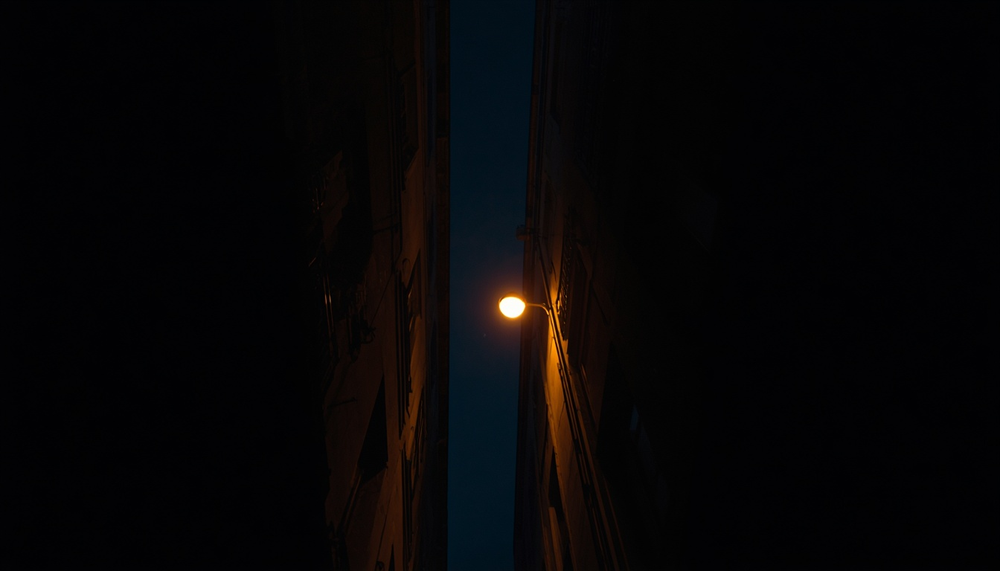

"I don't make films. I make rooms you can't leave. Rooms where the light remembers your name and the silence has weight."
— Marie Dubois, Cahiers du Cinéma interview, 2024




Born in Lyon, raised between projector light and rain-soaked streets. I studied at La Fémis and learned from the best — not in classrooms, but in dark rooms where celluloid burned through your fingers and you understood what a frame was really for.
My work lives in the space between memory and desire. I'm interested in the silence between two people who want the same thing. In the way light falls through a window at 4am when you haven't slept. In the weight of a doorway you're afraid to walk through.
Every film I make is a question I can't answer any other way. The camera is not a tool — it's a confession. I point it at the things I'm afraid to say out loud, and I hold it there until the audience feels the same discomfort I do.
Currently developing my eighth feature, a meditation on time and architecture set across three cities — Paris, Tokyo, Marrakech. Production begins autumn 2026.
"Cinema is the art of making the invisible unbearable. The best films are the ones that change you without your permission."





